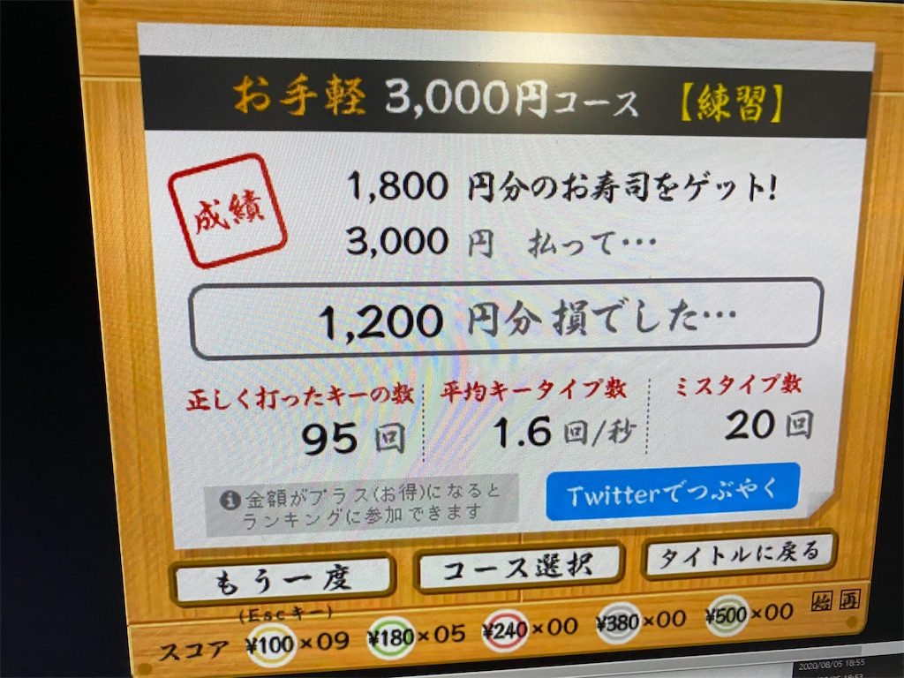
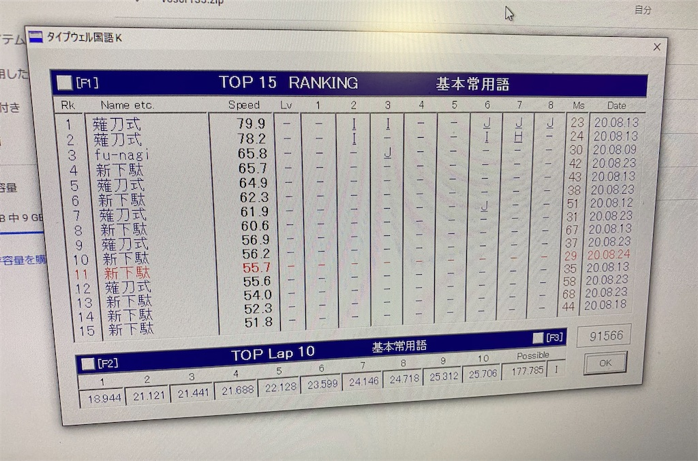

投稿日: 2020/08/24 01:52:35
カテゴリ: タイプウェル
サムネイル: 

平日はそれほど練習出来なかったが、土日をフルに使って、練習した。
だんだんと薙刀式のときの自分の最高記録に近づいてきた感があるけれど、キー配置によって記憶度合いにものすごく差があるので、すごく速く打てる組み合わせとそうでないものの差がすごい。
ちなみに平日での忘却が強くて、土曜日の最初に練習を開始したときはホント打てなくなってて泣きそうだったけれど、丸一日マイタイピングとかに向かっていたらすぐ記憶が戻ってきて安心した。多分この一度忘却するのが、長期記憶につながるので良いのだと思う。何回か忘却と再記憶を繰り返していけば忘れることはなくなりそうだけど、新下駄配列はマイナー濁音とかマイナー拗音があるのでちょっと怖い気も。そういうの後日リストアップしとかなくっちゃ。
ちなみに土曜日の段階ではとてもタイプウェルのような分量はサクサク打てず、そういうときはマイタイピングとか寿司打が向いてる。ただ寿司打は時間制限あるので、とにかく凹むけど楽しい。マイタイピングは好みの題材が選べるので続けやすい。(いずれも、やまぶきRのローマ字入力用設定を使用。)
一度密度の濃い練習をして記憶が復活すれば案外サクサク打てるので、この段階になればタイプウェルとかが向いてる。ただマイタイピングとか寿司打と違って記号が出てこないので、時々マイタイピングをするのが良さそう。
来週末こそは薙刀式のときの最高記録を超えたい。平日はまた朝夕の練習と、移動時のイメトレくらいかな。
そういえば、キーボードを同時に左右二台置いて左手と右手で別々に手を置く方法をこの土日から始めて、肩こりと首こりがものすごく楽になった。仕事でもぜひ導入しよう。